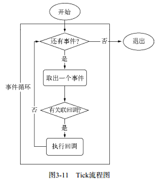
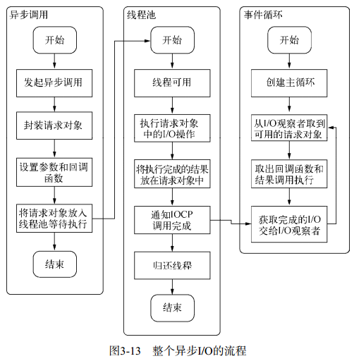

异步I/O
2020.02.11 @wsl
在众多高级编程语言或运行平台中，Node是首个将异步作为主要编程方式和设计理念的。
Node的基调：异步I/O、事件驱动和单线程。
Nginx采用纯C编写。
Nginx具备面向客户端连接的强大能力，但受限于各种同步的编程语言。
Node既可以作为服务器去处理客户端的大量并发请求，也可以作为客户端面向网络中的各个应用进行并发请求。
1. 为什么要异步I/O
需要处理并发请求。具体可分为用户体验和资源分配两个方面。
1.1 用户体验
前端通过异步可以消除掉UI阻塞的现象，但是前端获取资源的速度也取决于后端的响应速度。
I/O是昂贵的，分布式I/O是更昂贵的。
只有后端能够快速响应资源，才能让前端的体验变好。
1.2 资源分配
假设业务场景中有一组互不相关的任务需要执行，主流的解决方案有：
- 单线程串行依次执行；
- 多线程并行完成；
添加硬件资源是一种提升服务质量的方式，但并不是唯一的方式。
单线程同步编程模型会因阻塞I/O导致硬件资源得不到更优的使用；
多线程编程模型也因为编程中的死锁、状态同步等问题让人诟病。
Node的解决方案：
- 利用单线程，远离多线程死锁、状态同步等问题；
- 利用异步I/O，让单线程远离阻塞，以更好地使用CPU;
为了弥补单线程无法利用多核CPU的缺点，Node提供了类似前端浏览器中Web Works的子进程，该子进程可以通过工作进程高效地利用CPU和I/O。
2. 异步I/O实现现状
2.1异步I/O和非阻塞I/O
操作系统内核对I/O只有两种方式：
- 阻塞；
- 非阻塞；
阻塞I/O的特点：
- 调用之后一定要等到系统内核层完成所有的操作后，调用才结束；
阻塞I/O造成了CPU等待I/O，浪费等待时间，CPU的处理能力不能得到充分利用。为了提高性能，内核提供了非阻塞I/O。非阻塞I/O和阻塞I/O的差别为调用之后会立即返回。
非阻塞I/O的缺点：
由于完整的I/O并没有完成，立即返回的并不是业务层期望的数据，仅仅是当前调用的状态。为了获取完整的数据，应用程序需要重复调用I/O操作来确认是否完成。(轮询)
轮询：
- read：最原始，性能最低的一种，通过重复调用来检查I/O的状态来完成完整数据的读取；
- select：read的改进方案，通过对文件描述符上的事件状态来判断；
- poll：select的改进方案，采用链表的方式避免数组长度的限制，其次能避免不需要的检查。但是当文件描述符较多的时候，性能依旧十分的低下;
- epoll：Linux下效率最高的I/O事件通知机制，在进入轮询的时候如果没有检查到I/O事件，将会进行休眠，直到事件将它唤醒。真实利用了事件通知、执行回调的方式，而不是遍历查询，所以不会浪费CPU、执行效率较高;
- kqueue：与epoll类似，仅在FreeBSD系统存在；
轮询对于应用程序而言只能算是一种同步。
2.2 理想的非阻塞异步I/O
期望的完美的异步I/O应该是应用程序发起非阻塞调用，无须通过遍历或者事件唤醒等方式轮询，可以直接处理下一个任务，只需在I/O完成后通过信号或回调将数据传递给应用程序。
2.3 现实的异步I/O
多线程的异步I/O：
通过让部分线程进行阻塞I/O或者非阻塞I/O加轮询技术连完成数据获取，让一个进程进行计算处理，通过线程之间的通信将I/O得到的数据进行传递，实现异步I/O。
Windows的IOCP:
调用异步方法，等待I/O完成之后的通知，执行回调，用户无须考虑轮询，但内部是线程池的原理，不同之处在于这些线程池由系统内核接手管理。
Node的libuv：
Node提供了libuv作为抽象封装层，使得所有平台兼容性的判断都由这层来判断，并保证上层的Node与下层的自定义的线程池及ICOP之间各种独立。
另一个需要强调的地方在于我们时常提到Node是单线程的，这里的单线程仅仅只是JavaScript执行在单线程中罢了。在Node中，无论是*nix还是Windows平台，内部完成I/O任务的另有线程池。
3. Node的异步I/O
完成整个异步I/O环节的有事件循环、观察者和请求对象等。
3.1 事件循环
事件循环：
- 进程启动，创建循环，每次执行循环体的过程称为Tick；
- Tick过程查看是否有事件待处理，如果有，就取出事件及其相关的回调函数；
- 如果存在关联的回调函数，就执行；
- 进入下个循环，如果不再有事件处理，就退出进程；

3.2 观察者
观察者：
每个事件循环有一个或者多个观察者，而判断是否有事件要处理的过程就是向这些观察者询问是否有要处理的事件。
在Node中，事件主要来源于网络请求、文件I/O等，这些事件对应的观察者有文件I/O观察者、网络I/O观察者等。观察者将事件进行了分类。
事件循环是个典型的生产者/消费者模型。异步I/O、网络请求等是事件的生产者，源源不断为Node提供不同类型的事件，这些事件被传递到对应观察者，事件循环从观察者中提取事件并处理。
3.3 请求对象
请求对象是异步I/O过程中的重要中间产物，所有的状态都保存在这个对象中，包括送入线程池等待执行以及I/O操作完毕后的回调处理。
回调函数被设置在请求对象的oncomplete_sym属性上。
3.4 执行回调
组装好请求对象、送入I/O线程池等待执行，实际上完成了异步I/O的第一部分，回调通知是第二部分。
线程池中的I/O操作调用完毕之后，会将获取的结果储存在req->result属性上，然后调用PostQueuedCompletionStatus() 通知IOCP，告知当前对象操作已经完成。
事件循环的I/O观察者在每次Tick的执行中，会调用IOCP相关的GetQueuedCompletionStatus()方法检查线程池中是否有执行完的请求，如果存在，会将请求对象加入到I/O观察者的队列中，然后将其当做事件处理。
I/O观察者回调函数的行为就是取出请求对象的result属性作为参数，取出oncomplete_sym属性作为方法，然后调用执行，以达到调用JavaScript中传入的回调函数的目的。
整个I/O的流程：

事件循环、观察者、请求对象、I/O线程池这四者共同构成了Node异步I/O模型的基本要素。